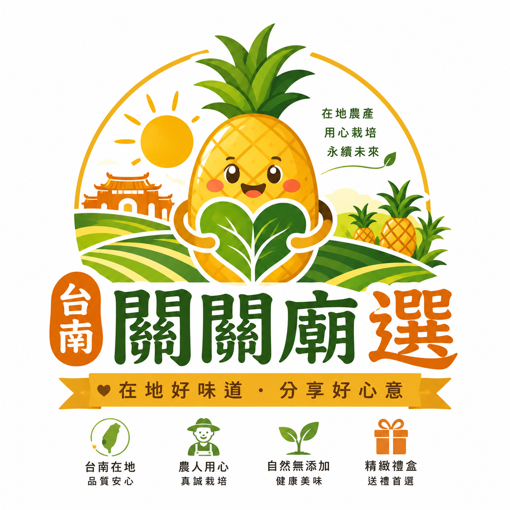
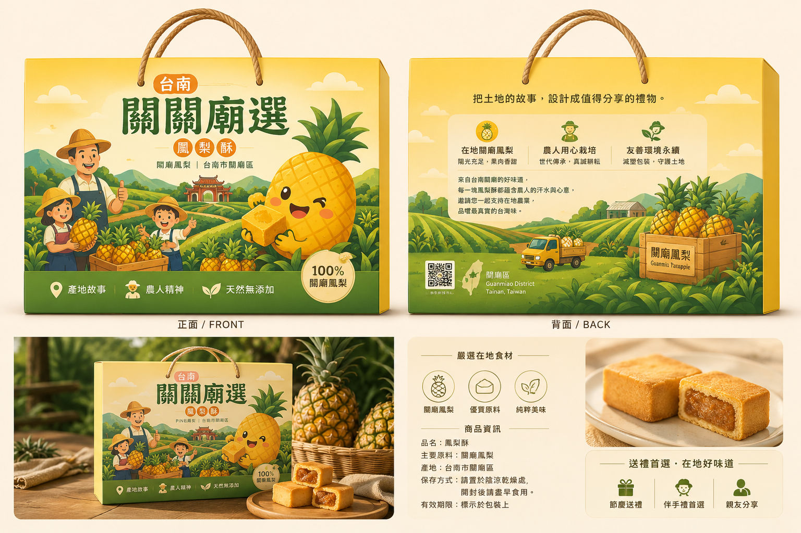
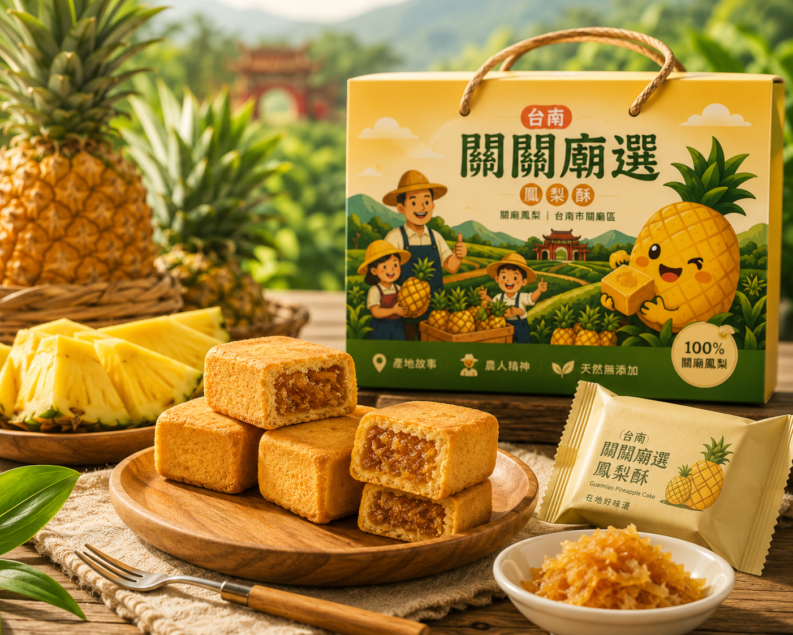

PACKAGING DESIGN × BRAND STORY × AI PROMPT
🎨 AI農產品包裝設計師
輸入少量資料，AI推演完整品牌包裝提案
從農產品名稱、產地、特色與目標客群出發，自動產生品牌命名、品牌故事、包裝文案、Logo Prompt、包裝設計 Prompt 與電商文案。
AI BRAND CASE STUDY
🍍 關關廟選鳳梨酥｜🍍 AI品牌推演成果展示
從品牌命名、Logo設計、包裝設計到商品攝影，
示範如何將一項農產品轉化成具有市場價值的農創品牌。
從一顆關廟鳳梨開始，
學習如何打造一個真正可以上市銷售的農產品品牌。

🎨 品牌 Logo
結合關廟鳳梨、在地農田與永續理念， 建立品牌識別與地方特色。

📦 包裝設計
將產地故事、農人精神與送禮文化融入包裝， 提升商品價值感。

📸 商品攝影
使用情境式商品攝影， 作為電商首頁與社群行銷素材。
🚀 AI品牌推演流程
ㄒㄒ 品牌命名 → Logo設計 → 包裝設計 → 商品攝影 → 電商行銷 → 創業經營推演
SCENARIO CARDS
一鍵帶入農產品案例
先從案例開始，再讓學生修改產品、產地、特色與風格，觀察品牌定位如何改變。
BRAND INPUT
AI農產品包裝設計師
少輸入、多推演、重理解：讓學生從資料看懂品牌包裝設計邏輯。
想強調的品牌元素
AI SIMULATION LEARNING
這不是做圖，而是品牌包裝推演學習
產品定位
看懂產品要賣給誰。
品牌故事
把產地與農人精神轉化成價值。
包裝設計
用色彩、文案與形式建立信任感。
行銷轉換
讓包裝成為電商與社群銷售素材。